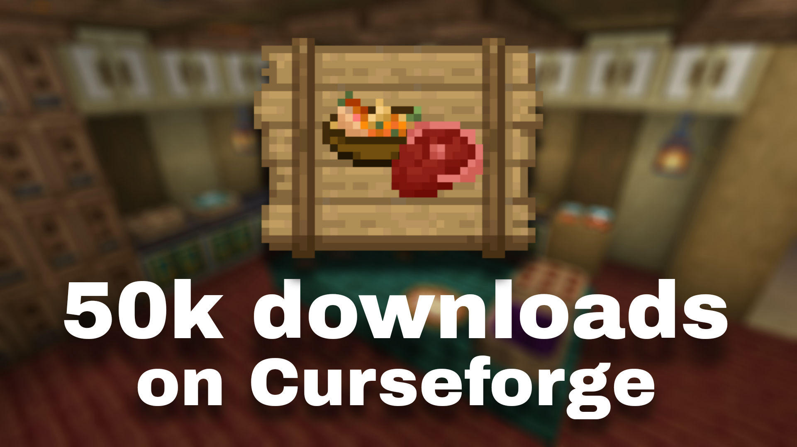
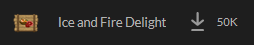

<!DOCTYPE html>
<html lang="en">
<head>
  <link rel="icon" href="../img/themes/active/favicon.png">
  <title>50k downloads IaFD on Curseforge | Blog | Donne431</title>
  <meta name="viewport" content="width=device-width, initial-scale=1, maximum-scale=1" />
  <meta name="title" content="50k downloads IaFD on Curseforge | Blog | Donne431">
  <meta name="description" content="Welcome to my website! I am Donne431, just a guy, who love made a modifications for games. I'm 16 years old, and I'm from Crimea, Russia (demi-island washed by the Black and Azov Sea). I also like to create almost any content for Minecraft, that is: mods, maps, resource packs, servers.">
  <meta name="keywords" content="Minecraft, Forts, Mods, Resourcepacks, Datapacks, Donne431">
  <meta name="theme-color" content="#4bb4f1">


  <script src="https://code.jquery.com/jquery-3.3.1.min.js"></script>
  <script src="https://cdn.jsdelivr.net/npm/handlebars@latest/dist/handlebars.js"></script>
  <script src="https://mcapi.us/scripts/minecraft.min.js"></script>
  <script src="../js/main.js"></script>
  <script src="../config.js"></script>
  <script src="../js/lightbox.min.js"></script>

  <script>tosAgreed = true</script>

  <link rel="stylesheet" href="https://cdnjs.cloudflare.com/ajax/libs/font-awesome/6.7.1/css/all.min.css"/>
  <link rel="stylesheet" href="../css/style.css">
  <link rel="stylesheet" href="../css/blog.css">
  <link rel="stylesheet" href="../config.css">
  <link href="../css/lightbox.css" rel="stylesheet" media="all">

</head>


<body>

  <div id="target"></div>

  <script id="template" type="text/x-handlebars-template">

  <header>
    <div class="hero" id="hero">
      <a href="#!"><h1 style="padding-top: 3%;"></h1></a>
    <p> </p>
    <div class="news-card" align="center">
      <a href="../" class="btn"><i class="fa-solid fa-house"></i> Home</a>
      <a href="../blog" class="btn"><i class="fa-solid fa-newspaper"></i> Blog</a>
      <a href="#links" class="btn"><i class="fa-solid fa-share"></i> Links</a>
    </div>
    <p> </p>
    </div>
  </header>

  <section class="dark" id="blog">
    <h1><i class="fa-solid fa-newspaper"></i> Blog</h1>
    <div id="news">
    <div class="news-card" align="center">
    <a>MISC</a><br>
    <a href="../img/blog/iafd-50k/preview.png" data-lightbox="roadtrip"></a>
    <h1 align="center">50k downloads  Ice and Fire Delight on Curseforge</h1>
    <i>06.03.2025, 16:40</i><br>
    </div>
    <p>
    Hello to all the readers of this post!<br><br>

    I'm happy to announce great news - <a href="../img/projects/ice_and_fire_delight/logo_cutted.png" data-lightbox="roadtrip"></a> Ice and Fire Delight has already collected more than 50k downloads on <a href="../img/curseforge.png" data-lightbox="roadtrip"></a> Curseforge! <br>
    <a href="../img/blog/iafd-50k/iafd_50k_downloads.PNG" data-lightbox="roadtrip"></a> <br>
    A long time, of course, to collect these 50k, but nevertheless it happened, also to be honest I can note that without your support it would not have happened! I would like to do something for the mod in honor of this, but unfortunately I can not, now I'm working on a new update so most of my free time I try to spend on existing projects: <a href="../img/projects/ice_and_fire_delight/logo_cutted.png" data-lightbox="roadtrip"></a> Ice and Fire Delight and <a href="../img/themes/active/favicon.png" data-lightbox="roadtrip"></a> this site. And to be honest, I can't think of anything interesting to do. <br> <br>
    Speaking of the new update, I can't help but mention that on <a href="/projects/ice_and_fire_delight/spoilers.html" style="color:rgb(66, 229, 66)">this tab</a> you can see spoilers for the new version. <br> <br>
    Lastly, if you want to join the mod development team as a translator, you just need to message me in <a href="../img/discord.png" data-lightbox="roadtrip"></a> Discord! The translation process itself not only helps other players to play with the mod in a language they are comfortable with, but it also helps YOU to see content that the average reader/player can't see, such as snapshots of the mod (pre-release versions of the mod that I send to the translators to understand the context). Basically, you get a new version of the mod before anyone else, although I can't help but point out that obviously the snapshots may differ from the final version, especially if the translator finds a bug or error.

   <!--
    Привет всем читателям этого поста!

    Я рад сообщить вам отличную новость - <a href="../img/projects/ice_and_fire_delight/logo_cutted.png" data-lightbox="roadtrip"></a> Ice and Fire Delight собрал уже более 50к скачиваний на Curseforge! <br>
     <br>
    Долго, конечно собирались эти 50к, но всё же это произошло, также честности ради могу отметить то, что без вашей поддержки этого бы конечно не произошло! Хотелось бы что-то сделать для мода в честь этого, но к сожалению я не могу, сейчас я работаю над новым обновлением поэтому большинство свободного времени я пытаюсь тратить на действующие проекты: <a href="../img/projects/ice_and_fire_delight/logo_cutted.png" data-lightbox="roadtrip"></a> Ice and Fire Delight и данный сайт. Да и, честно говоря, не приходит мне в голову ничего интересного прям. <br>
    Кстати говоря о новом обновлении, не могу не отметить, что на <a href="/projects/ice_and_fire_delight/spoilers.html" style="color:rgb(66, 229, 66)">данной вкладке</a> вы можете посмотреть спойлеры для новой версии. <br>
    Напоследок скажу, если вы хотите присоединиться к команде разработки мода, в качестве переводчика, вам нужно просто написать мне в Discord! Сам процесс перевода не только помогает другим игрокам играть с модом на удобном для них языке, но ещё он помогает ВАМ видеть контент, который не видит обычный читатель/игрок, к примеру снапшоты к моду (предварительные версии мода, которые я высылаю переводчикам для понимаю контекста). По сути говоря, вы получаете новую версию мода раньше других, хоть не могу не отметить то, что очевидно снапшоты могут отличаться от финальной версии, особенно если переводчик находит баг или ошибку.
   -->
    </p>
    <p align="center"><i class="fa-solid fa-user"></i> Donne431 (Author)</p>
    </div>
  </section>
  <section class="dark">
    <div class="news-card" align="center">
    <a href="../blog/unfreezing-projects.html" class="btn2"><i class="fa-solid fa-arrow-left"></i> Previous post</a>
    <a href="../blog" class="btn2"><i class="fa-solid fa-newspaper"></i> Back to Blog</a>
    <a href="../blog/iafd-1year.html" class="btn2"><i class="fa-solid fa-arrow-right"></i> Next post</a>
    </div>
  </section>

  <section class="light">
    <h1><i class="fa-solid fa-share"></i> Links</h1>
    <div id="links" align="center">
      <a href="https://discord.gg/NQBhQRDEhF"></a>
      <a href="https://www.curseforge.com/members/donne431/projects"></a>
      <a href="https://modrinth.com/user/Donne431"></a>
      <a href="https://github.com/Donne431"></a>
      <a href="https://www.donationalerts.com/r/donne431"></a>
    </div>
  </section>

  <footer>
    <a>&copy; {{server_port}} {{server_name}}. All Rights Reserved.</br>{{server_name}} is not affiliated with or endorsed by Mojang Studios or Microsoft<br>{{server_ip}}</a>
    <a></a>
    
  </footer>
  </script>
  <script src="../js/license.js"></script>

</body>
</html>
